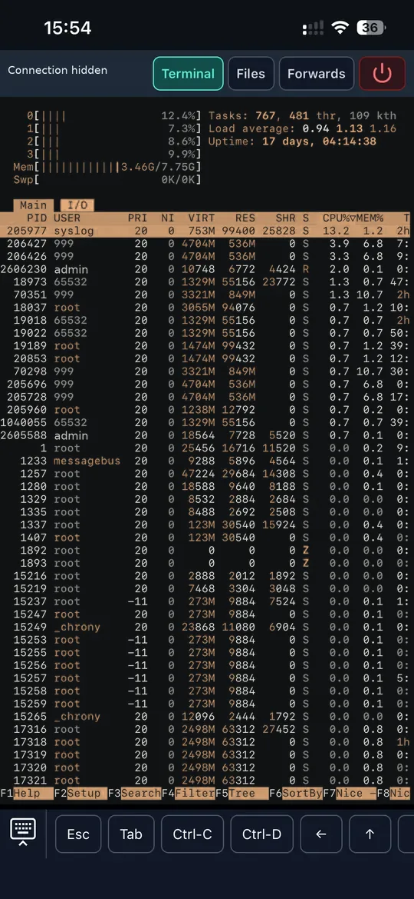
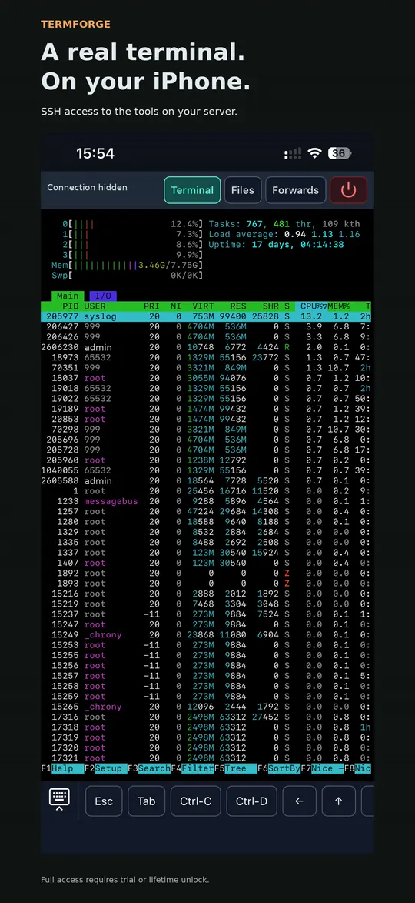
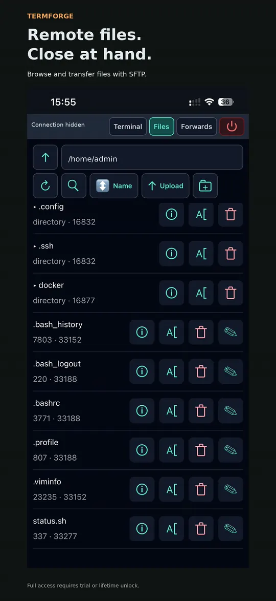
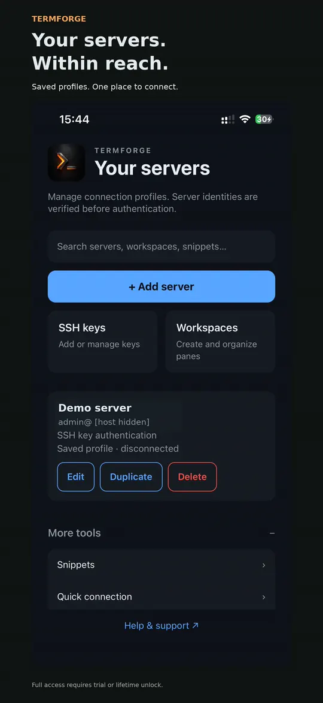
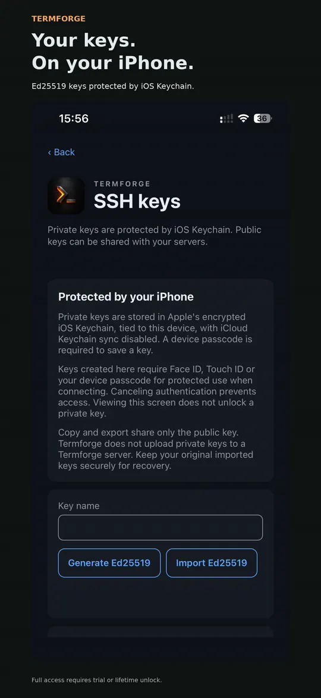
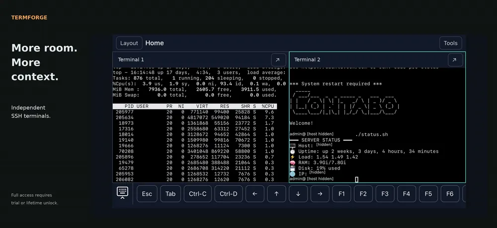

Start when you're ready.
Explicitly start the 7-day Trial in the app. The seven days begin when Apple verifies the free trial acquisition, not at installation. Every feature is available for exactly 168 hours.
SSH / SFTP / iPhone
Your servers. Your familiar tools. A place to bring them together, with interactive SSH terminals, saved split panes, and remote files close at hand.
Planned launch: free download. 7 days free. Full access. Pay once. No subscription.
€14.99
lifetime unlock; localized App Store prices elsewhere. No automatic charge.
For iPhone · iOS 17 or later
A reachable SSH server and valid credentials are
required.

Runs on your remote hostThe tools already on your server.
Organized on your phoneSaved servers, snippets, and layouts.
No Termforge accountConnect to servers you control.
01 / From connection to command
For developers, system administrators, and people who look after their own remote machines.
Save a hostname, port, and username. Choose password or Ed25519 key authentication. Your network must be able to reach the server.
dev.example.com : 22
Fictional example host
Compare the server fingerprint with a trusted source before approving it. Authenticate through the native prompt. A changed known host key blocks the connection.
Inspect logs in a terminal, keep another pane for commands, and browse a remote directory through SFTP. The commands run on your server.
journalctl -u example.service
Illustrative remote command; requires a host with systemd.
One complete feature set
Planned launch model. StoreKit payment validation and a compatible later binary are still pending.
Explicitly start the 7-day Trial in the app. The seven days begin when Apple verifies the free trial acquisition, not at installation. Every feature is available for exactly 168 hours.
Use the same full feature set during the trial and after unlocking. There is no subscription, automatic payment at expiry, or feature tier. You can buy lifetime access immediately without starting a trial.
€14.99 is the euro price. Other storefronts use Apple's localized pricing. The App Store purchase sheet supplies your applicable price. Lifetime is a non-expiring Termforge unlock, subject to Apple refunds and revocations.
Purchases happen inside the iPhone app through Apple. This website does not start trials or take payment. Public availability and the listing link remain pending; perpetual OS support and unrelated future products are not promised.
Trial, expiration & purchase help →02 / Built around the work
Move between terminals, files, and connection details without losing your layout.
Use interactive SSH terminals for the tools installed on your host. Organize sessions with tabs and horizontal or vertical split panes; resize, focus, or zoom a pane as you work.
Browse, search, and sort remote directories. Upload a selected local file, download to Files, or make a small text edit without reaching for a laptop.
SFTP and permissions depend on your server. Interrupted transfers need a deliberate retry.
Keep Escape, Tab, arrows, modifiers, and function keys accessible. Save frequently used commands as snippets, then choose when to send them.
A text composer provides an alternative input path for composed Unicode. Current-candidate keyboard and accessibility checks remain pending.
Keep server profiles and known-host fingerprints in one place. Generate or import Ed25519 keys, use encrypted OpenSSH Ed25519 imports, and copy or export public keys.
The source also implements local/remote TCP forwarding and one password-authenticated bastion hop. Portable integration tests pass; signed-iPhone acceptance of these paths is pending. SOCKS, agent/X11 forwarding, multiple hops, and key-authenticated bastions are unavailable.
A saved workspace is a saved arrangement. Backgrounding or idle lock closes connections. When you return, unlock and reconnect; live shells do not survive an app relaunch. A remote tool such as tmux may preserve work on the server independently.
03 / A short walkthrough
A short iPhone recording of terminal output, SFTP browsing, and two terminal panes.
The video plays only on request. For setup, follow the getting-started guide.
04 / A closer look
Real iPhone screenshots with promotional captions. Server identifiers are hidden.





05 / Privacy & control
No Termforge account, hosted server service, analytics, or cloud sync is configured in the current app.
Profiles, layouts, snippets, and connection-history metadata stay in local app storage. Credentials use Keychain; terminal transcripts are not persisted.
SSH and SFTP send commands and files to the servers you select. Their operators can log activity and have their own data practices.
This static site includes no tracking, cookies, remote fonts, or third-party embeds. A future hosting provider may keep request logs.
Host-key checks and native credential protection are implemented. Current-candidate physical security checks are still pending; this is not a security certification.
Read the privacy policy →06 / Before you connect
Yes. You need a reachable SSH server that you are authorized to use, plus a valid username and supported credentials. Termforge does not provide a hosted server or an app account.
On the remote host over SSH. Termforge provides the terminal interface on iPhone; it is not a local Linux environment. Tools such as vim, htop, or tmux must be installed on the host.
The current configuration targets iPhone running iOS 17 or later. It does not provide iPad, macOS, Android, or browser-app support. This website can be read on other devices.
Both passwords and Ed25519 keys are supported, including supported encrypted OpenSSH Ed25519 imports. Stored credentials require a device passcode; protected key use requests device authentication. RSA/ECDSA private-key authentication and keyboard-interactive/MFA are unavailable. Private-key export and adding passphrase encryption to generated keys are unavailable.
Its saved layout, pane titles, server assignments, and tab order. It opens disconnected; it does not restore a live process, terminal transcript, or SSH connection.
No. Background or idle lock closes sessions and stops transfers and forwarding. Return, unlock, and reconnect to continue. Network loss may also disconnect you. Unsent input and commands are not replayed automatically; use server-side tmux if you need work to persist remotely.
Yes, through SFTP if your server supports it and your account has permission. Transfers are bounded to 256 MiB per file. The lightweight editor handles UTF-8 text up to 2 MiB and asks you to resolve conflicting changes. Downloads can be exported to Files.
The planned launch offer is a free download, an explicitly started seven-day full-function trial, then a €14.99 one-time lifetime unlock. No subscription or automatic charge; buying immediately is allowed. Other storefronts use Apple's localized pricing and the App Store sheet supplies the applicable price. Termforge is currently in App Store review. The download link will be added once the listing is ready. Read the availability note.
The original verified acquisition of Apple's free 7-day Trial starts exactly 168 hours of full access. A canceled or pending transaction does not start it. Reinstalling, restoring, or moving to a new device under the same App Store account does not restart the trial; it restores the original acquisition date. Termforge does not provide cross-account recovery or promise Family Sharing.
New and active remote work stops: SSH connections and reconnects, command execution from snippets, SFTP operations and transfers, forwarding, and jump-host routes. Active work is interrupted; transfers may be partial, and closing SSH does not guarantee remote processes are killed. Saved hosts, keys, settings, and local drafts are kept. Safe local recovery, copy/export, data deletion, support and purchase/restore remain available under existing device authentication.
Choose Restore Purchases in Welcome, Access or Settings, using the original App Store account. StoreKit's locally available verified lifetime entitlement works offline; a price-catalog failure alone does not remove access. A verified offline trial still expires at its original boundary. If a fresh install has no verifiable transaction state, connect and restore. Apple refunds or revocations remove the paid unlock when reported; an independently valid trial can still apply. Purchase troubleshooting.
Start with the support guide for connection, key, host-trust, and file-transfer issues. For support or private security reports, email adrian.glazer@gmail.com.
Your next remote task
7 days free. Full access. Then €14.99 once for lifetime access — localized pricing elsewhere. No subscription or automatic charge. Planned launch offer; purchase validation pending.
Termforge is currently in review with Apple. It is not yet available for public download.
The App Store download link will be added here once the listing is ready. Until then, the App Store buttons lead to this status note. A public release date has not been announced.
In App Store review · Release date to be announced.